웹 검색으로 확보한 설명용 사진 18장. 고론탈로 조사 현장을 직접 촬영한 증거 사진과 구분합니다.
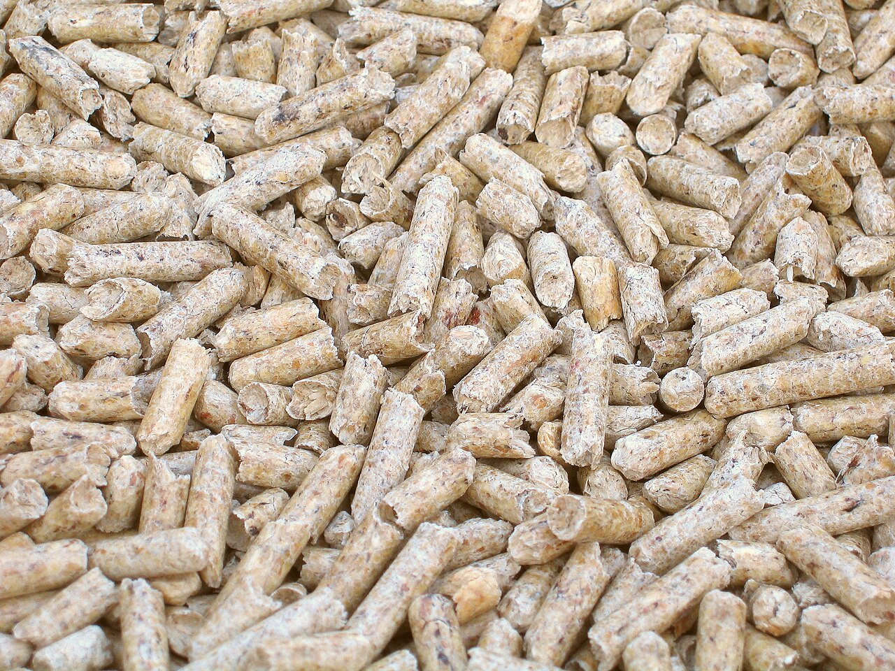
Wood pellets
저작자: Amaza
원본 또는 공개 썸네일 저장. 화면에서 잘라 표시. 해당 사진의 파생물에는 원래 라이선스 적용.
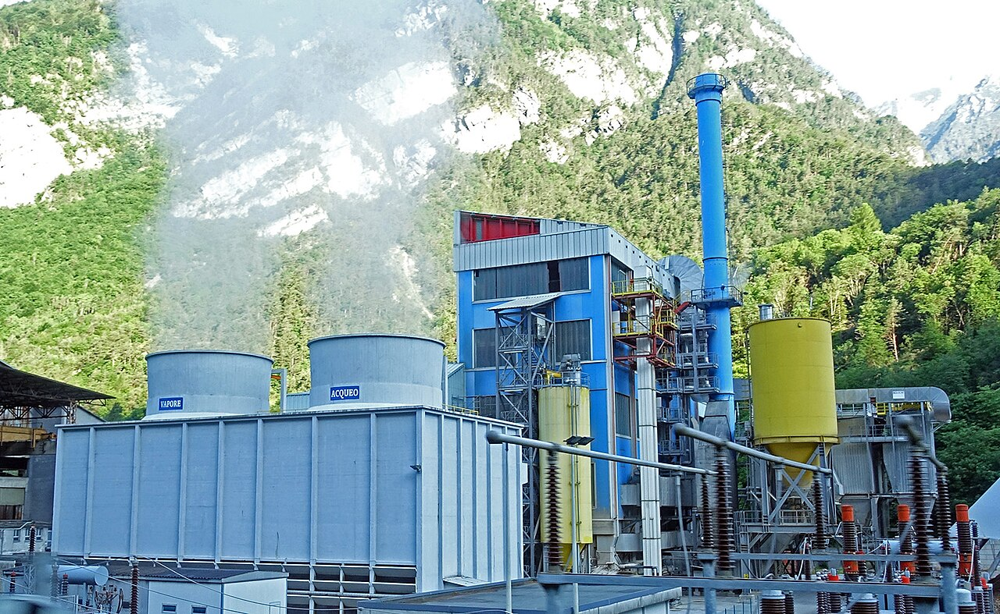
SICET, Biomass power plant in Ospitale di Cadore, Italy.
저작자: Tiia Monto
Wikimedia Commons 원문 / CC BY-SA 3.0
원본 또는 공개 썸네일 저장. 화면에서 잘라 표시. 해당 사진의 파생물에는 원래 라이선스 적용.
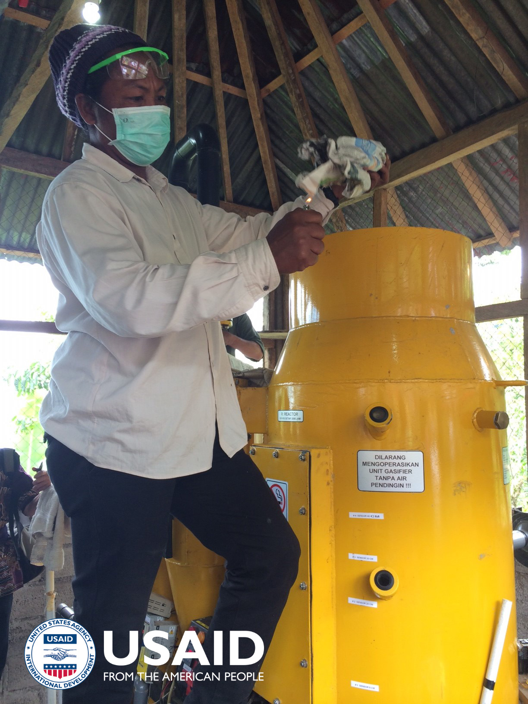
Rice husk
저작자: USAID Indonesia
Wikimedia Commons 원문 / Public domain
원본 또는 공개 썸네일 저장. 화면에서 잘라 표시. 해당 사진의 파생물에는 원래 라이선스 적용.
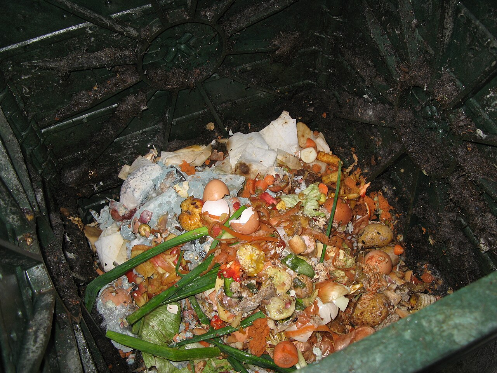
Photo March 2012 by E. von Muench
저작자: SuSanA Secretariat
Wikimedia Commons 원문 / CC BY 2.0
원본 또는 공개 썸네일 저장. 화면에서 잘라 표시. 해당 사진의 파생물에는 원래 라이선스 적용.
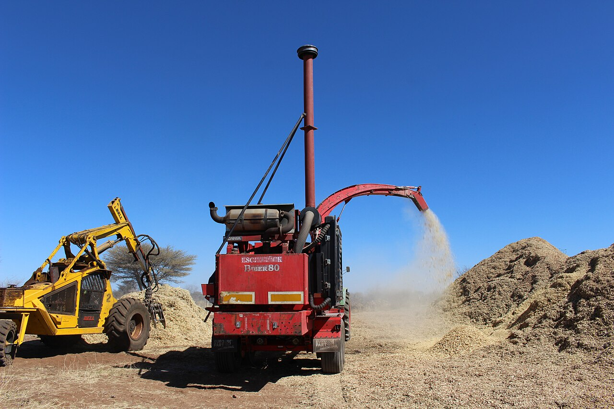
Chippers convert the biomass into a medium sized solid material with a typical particle size of 1 to 100mm.
저작자: GIZ Bush Control and Biomass Utilisation Project
Wikimedia Commons 원문 / CC BY-SA 4.0
원본 또는 공개 썸네일 저장. 화면에서 잘라 표시. 해당 사진의 파생물에는 원래 라이선스 적용.
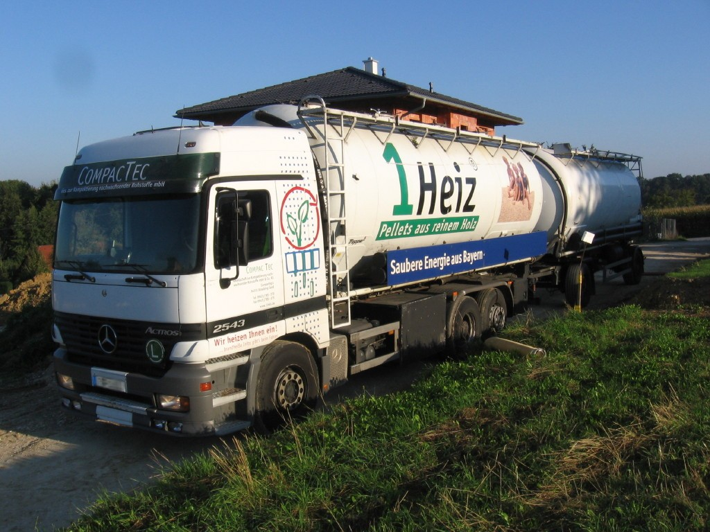
Wood-Pellet Truck
저작자: H. Raab (User:Vesta)
Wikimedia Commons 원문 / CC BY-SA 3.0
원본 또는 공개 썸네일 저장. 화면에서 잘라 표시. 해당 사진의 파생물에는 원래 라이선스 적용.
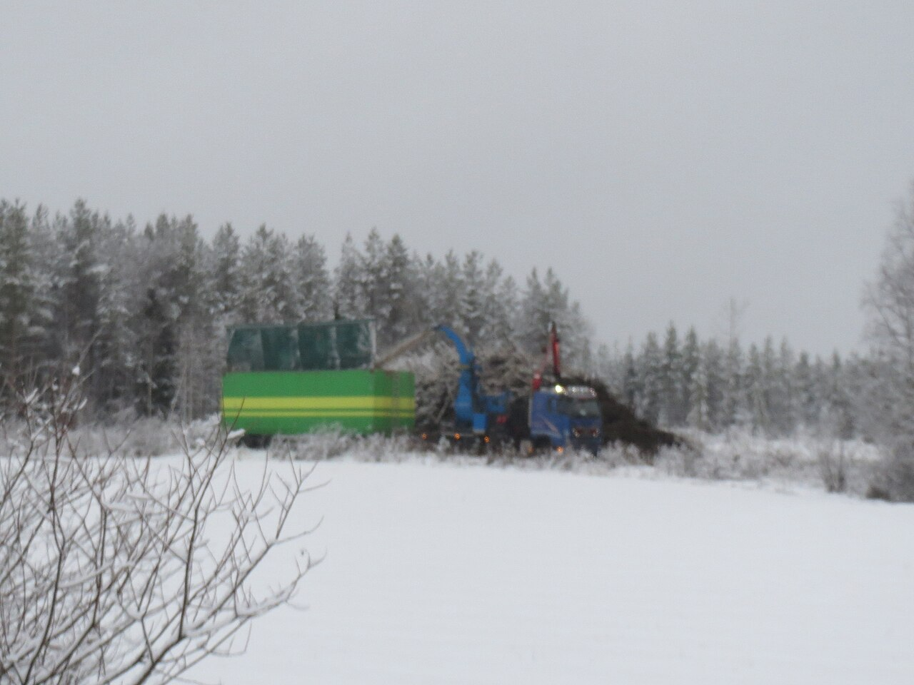
Hakkuutähde muuttuu puuhakkeeksi
저작자: Höyhens
Wikimedia Commons 원문 / CC BY-SA 4.0
원본 또는 공개 썸네일 저장. 화면에서 잘라 표시. 해당 사진의 파생물에는 원래 라이선스 적용.
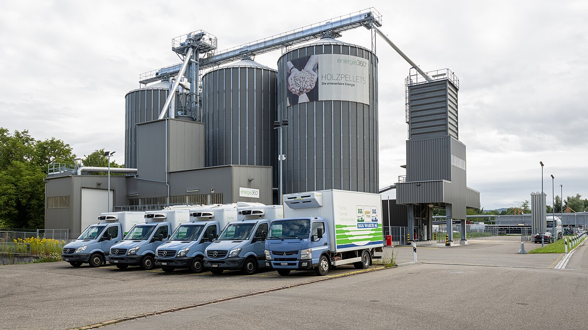
Wood pellet store in Schlieren near Zurich
저작자: JoachimKohler-HB
Wikimedia Commons 원문 / CC BY-SA 4.0
원본 또는 공개 썸네일 저장. 화면에서 잘라 표시. 해당 사진의 파생물에는 원래 라이선스 적용.
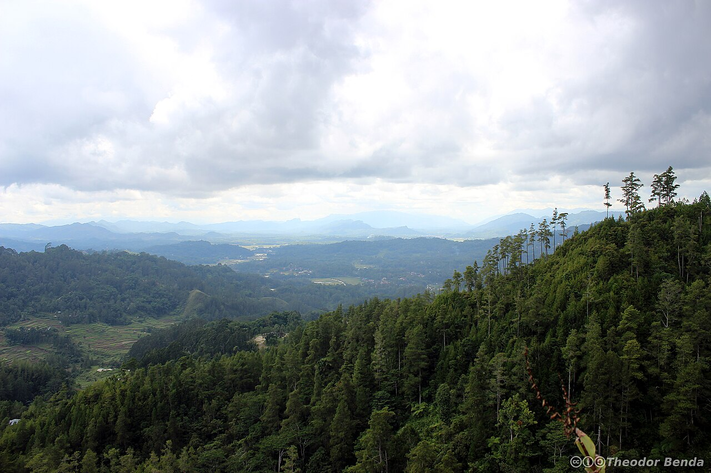
Sulawesi forest
저작자: Theodor Benda
Wikimedia Commons 원문 / CC BY-SA 2.0
원본 또는 공개 썸네일 저장. 화면에서 잘라 표시. 해당 사진의 파생물에는 원래 라이선스 적용.
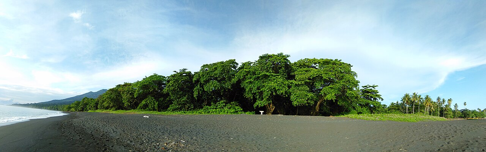
Panorama of forests and black sand beach in Tangkoko Nature Reserve, Sulawesi
저작자: T. R. Shankar Raman
Wikimedia Commons 원문 / CC BY-SA 3.0
원본 또는 공개 썸네일 저장. 화면에서 잘라 표시. 해당 사진의 파생물에는 원래 라이선스 적용.
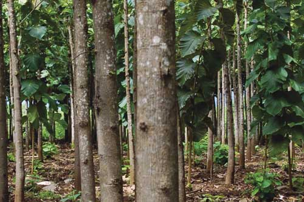
Teak tree planted in rows on a Latin American plantation.
저작자: Raypeloors
Wikimedia Commons 원문 / CC BY-SA 3.0
원본 또는 공개 썸네일 저장. 화면에서 잘라 표시. 해당 사진의 파생물에는 원래 라이선스 적용.
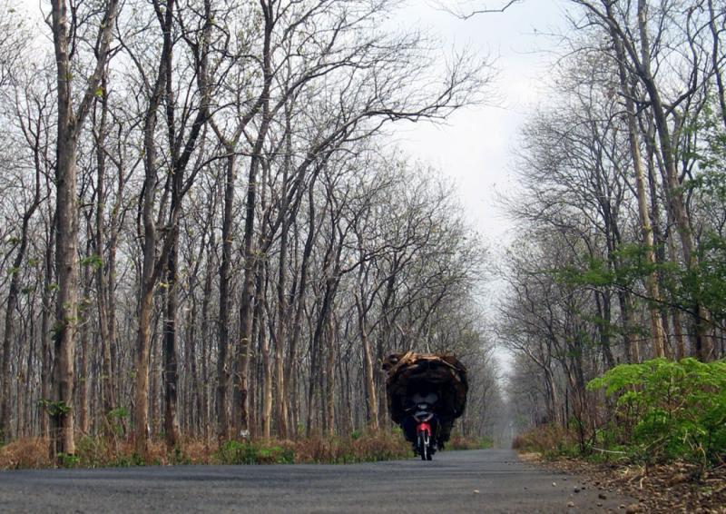
Teak plantation in Bojonegoro, East Java, Indonesia during dry season
저작자: Government of Bojonegoro, Indonesia
Wikimedia Commons 원문 / Public domain
원본 또는 공개 썸네일 저장. 화면에서 잘라 표시. 해당 사진의 파생물에는 원래 라이선스 적용.
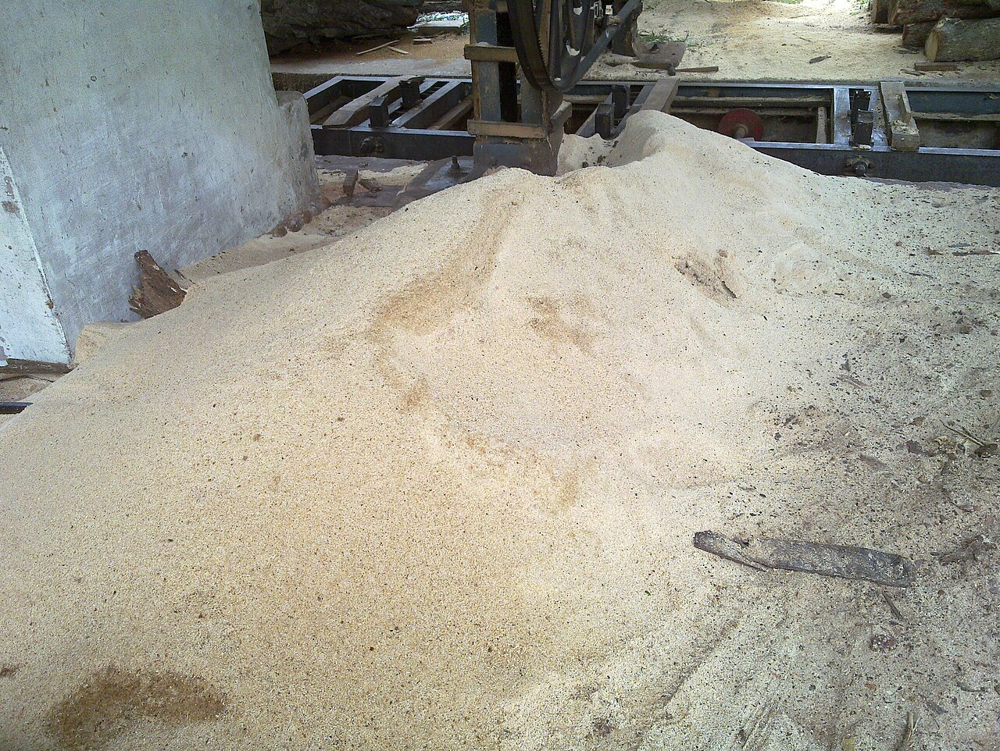
மரத்தூள்
저작자: Parvathisri
Wikimedia Commons 원문 / CC BY-SA 3.0
원본 또는 공개 썸네일 저장. 화면에서 잘라 표시. 해당 사진의 파생물에는 원래 라이선스 적용.
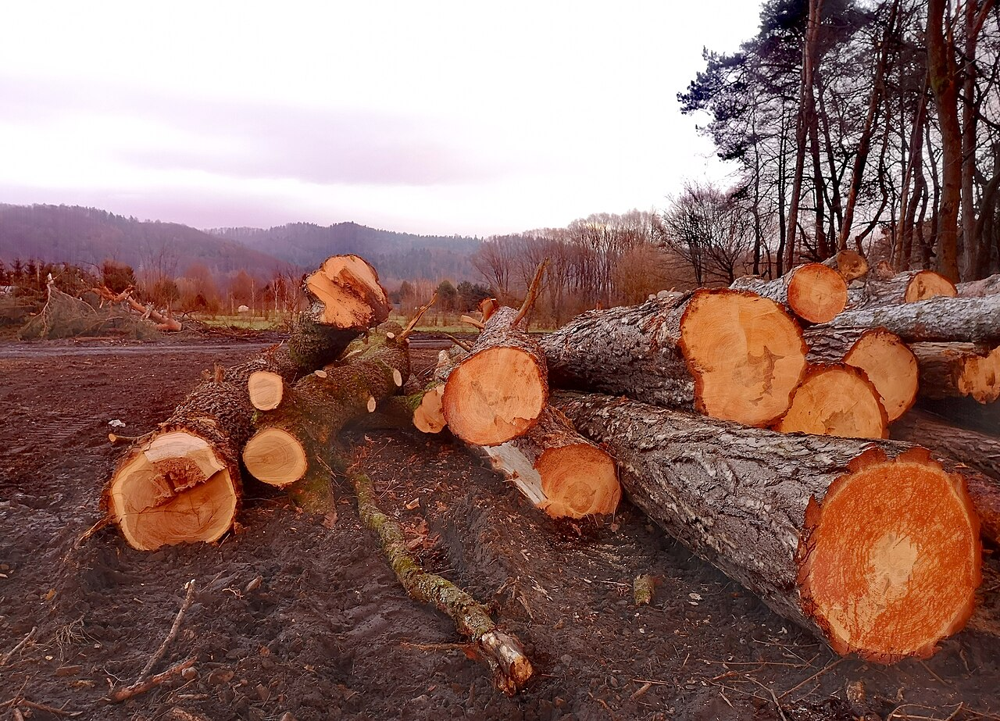
Stacked logs, freshly logged trees
저작자: Silar
Wikimedia Commons 원문 / CC BY-SA 4.0
원본 또는 공개 썸네일 저장. 화면에서 잘라 표시. 해당 사진의 파생물에는 원래 라이선스 적용.
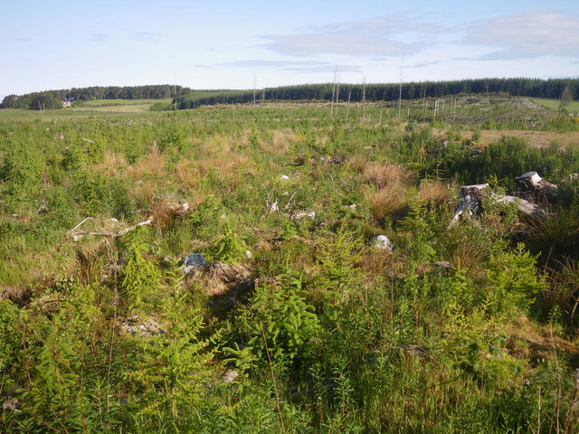
Recently clearcut conifer forest
저작자: C Michael Hogan
Wikimedia Commons 원문 / CC BY-SA 2.0
원본 또는 공개 썸네일 저장. 화면에서 잘라 표시. 해당 사진의 파생물에는 원래 라이선스 적용.
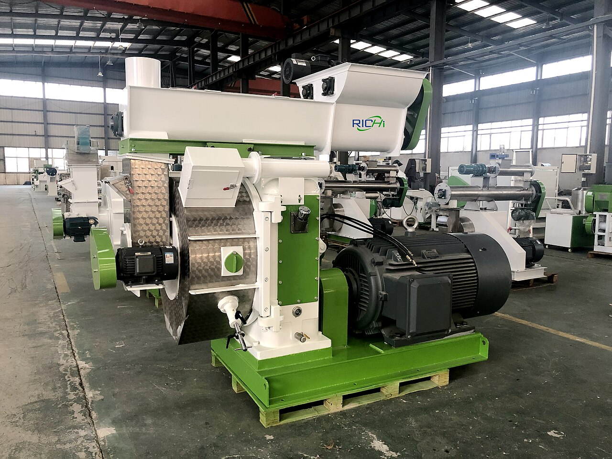
A machine specialized in the production of wood pellets with a production line output of 0.3-90T/H, made by richi machinery.
저작자: RICHI Machinery
Wikimedia Commons 원문 / CC BY-SA 4.0
원본 또는 공개 썸네일 저장. 화면에서 잘라 표시. 해당 사진의 파생물에는 원래 라이선스 적용.
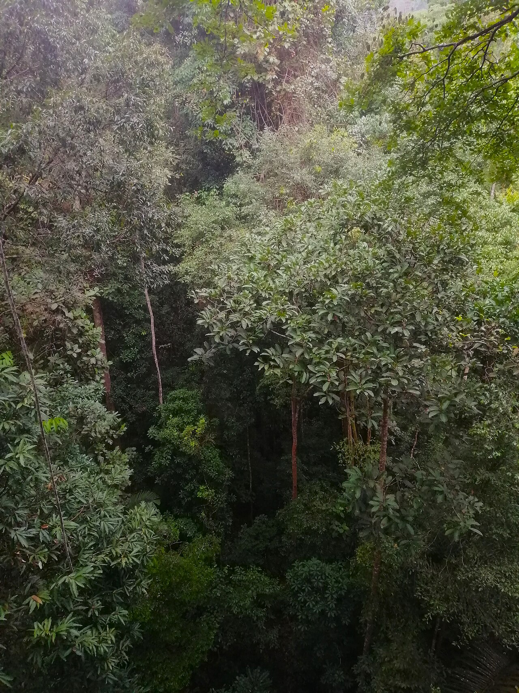
rainforest canopy and understory layers
저작자: Chamberlain of Nilai
Wikimedia Commons 원문 / CC BY-SA 4.0
원본 또는 공개 썸네일 저장. 화면에서 잘라 표시. 해당 사진의 파생물에는 원래 라이선스 적용.
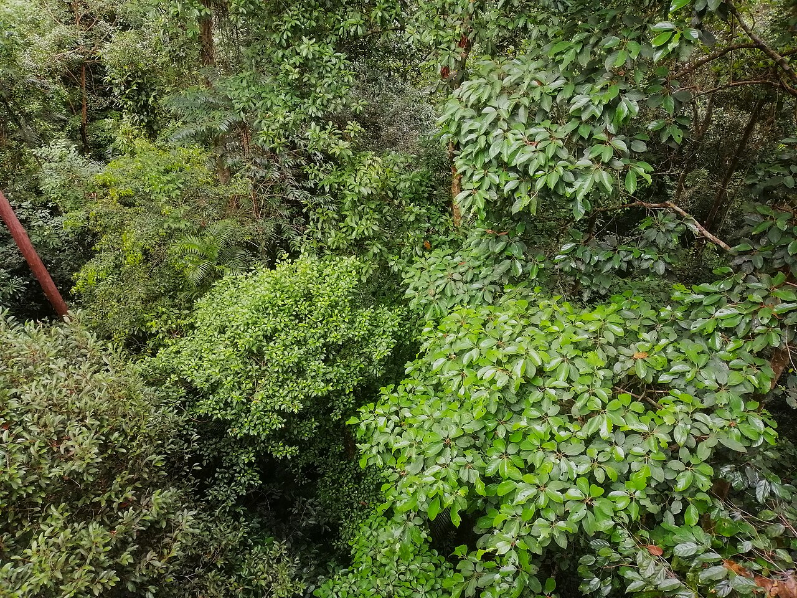
rainforest canopy layer top view
저작자: Chamberlain of Nilai
Wikimedia Commons 원문 / CC BY-SA 4.0
원본 또는 공개 썸네일 저장. 화면에서 잘라 표시. 해당 사진의 파생물에는 원래 라이선스 적용.


.jpg){kind=link}
.jpg){kind=link}


.jpg){kind=link}